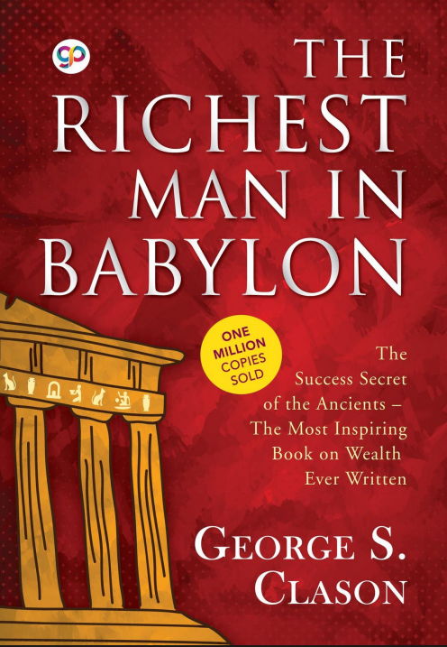

The Richest Man in Babylon

For this section I read two chapters from The Richest Man in Babylon by George S. Clason.
Seven Cures for a Lean Purse | Five Laws of Gold | My Biggest Takeaway
Reflection On 'Seven Cures for a Lean Purse'
The 'Seven Cures for a Lean Purse' talks about different ways that someone can improve their financial situation. Some of them are saving money, controlling what you spend, protecting your money and finding ways to make more money. The two that stood out to me were saving money and making your money grow. Saving money sounds pretty simple since you just put aside some of what you earn, but actually doing it is a lot harder. For me personally, saving money is difficult right now. Most of the money I make goes towards helping my mother pay debt for my education. She didn't want me to take out student loans because she didn't want me to graduate already having a lot of debt to pay back. I do want to save and I know I should, but right now I just don't really have much money left over to do it. I also related to the part about protecting your money. I've given money to friends before because I trusted them to pay me back and sometimes I just never got it back. I also spend money on games sometimes or spend money on other people because I want people to hang out or play with. Looking back at it, I've definitely wasted money doing that. So this part made sense to me because I need to be more careful with where my money is going and who I'm giving it to. The part I found the most interesting though was making your money work for you. I've been programming for around six years and making games for five. Right now I'm actually putting my own money into a game I've been working on for about six months. I'm hoping eventually the game can make money and become another source of income for me. That's basically how I understood Arkad's point about making your money work for you. Instead of just spending the money, I'm putting some of it into something that could hopefully make me more money later. Obviously the game could fail and I could make nothing from it, but that's just a risk I'm taking.
Summary Of Five Laws of Gold
The 'Five Laws of Gold' is basically about knowing how to save your money, grow it and most importantly not lose it doing something stupid. Nomasir kind of proves that because his father gave him gold and he still ended up losing it because he didn't really know what he was doing with it. Eventually he learned from it though and actually started following the five laws which helped him build his money back up. I think that was probably the main point for me, having money doesn't mean you're good with money. The law I thought about the most was making your money work for you. Mostly because I'm kind of trying to do that right now. Just working and getting paid isn't really enough for me because most of that money already has somewhere to go, so I've been putting money into a game I've been developing for around six months now. Obviously I'm hoping it actually does well because I've already put a lot into it, not just money either. If it does make money I don't really want to just take all of it and spend it. I'd probably put a good amount back into the game, make another game or maybe an app, and eventually hire people who are way better than me at stuff like art and design. I can program but I definitely can't do everything. The part about getting advice from people with more experience also got me a little because I'm pretty bad at that. I have an ego when it comes to asking for help and I know that. Sometimes asking someone how to do something makes me feel like I'm admitting they're better than me at it, even if that's literally the reason I'm asking them in the first place. So instead I usually just watch what people do, try to understand it and then figure it out myself. Which works sometimes, but with money that's probably not the smartest way to go about everything. I'd rather ask somebody a question and feel a little stupid for five minutes than lose money because I was too stubborn to ask. I also agree with the laws about not putting your money into something you don't understand, especially anything promising some crazy amount of money back. I've already made mistakes with money before and some of those decisions contributed to debt that I'm still dealing with now, so that part isn't really hypothetical for me. I can't go backwards and undo any of it so there's no point sitting there thinking about what I should've done. I just know now that there are certain mistakes I really don't want to make twice.
My Biggest Takeaway
My biggest takeaway from both chapters is that a lot of this stuff sounds like common sense when you read it, but actually doing it is a completely different thing. Obviously saving money is good, obviously wasting money is bad, most people already know that. The problem is when you actually have the money in your hand and there's something you want right now. It's easy to say you'll save for later until later feels really far away. Then there's wanting to make money quickly too, which can make a bad decision look like a good one at the time. A lot of it also hit differently for me because I've already seen what debt can do and how stressful it gets, especially when it starts affecting more than just one person in a family. I've also realized that just making more money isn't automatically going to fix everything. If I'm making more but still making bad decisions with it then I'm basically just giving myself more money to lose. I need to actually think about where my money is going, what I'm putting it into and how I can use some of it to hopefully make more later on. I still have things I need to deal with right now, so I can't suddenly follow every rule in these chapters perfectly, but I can at least stop thinking only about what's happening right now and start thinking a little further ahead.
Back to topBook
Clason, G. S. The Richest Man in Babylon.